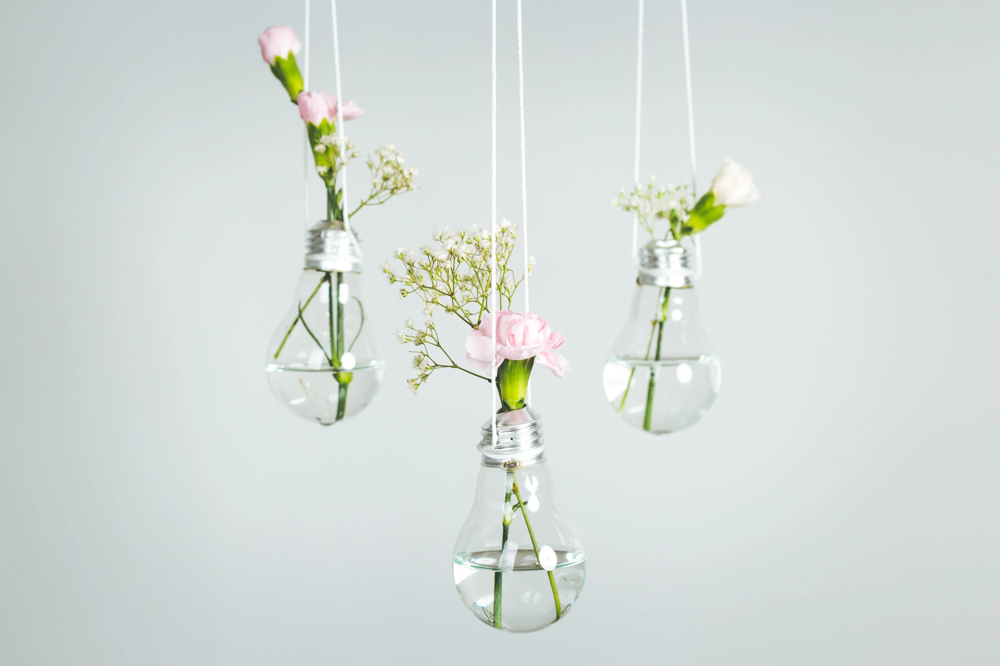
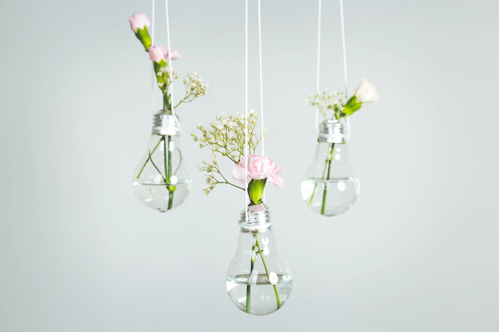

It’s about taking something old and worn, or discarded
and turning it into something of higher value or purpose.
Upcycling is the reuse of wasted materials to create new “value” to old items. Creative upcycling may have the ability to establish communities of makers and
re-establish connections between people and materials. It may be argued that designing to facilitate creative upcycling has the potential to provide broad social, economic, and environmental advantages by allowing the future lives of things to depend on context and culture rather than the designer's prescription. Upcycling provides opportunities for people and organisations to benefit the environment while savouring the results of their inventiveness. Think about upcycling the next time you encounter an old object that looks to be beyond its best and witness it change into something precious and fresh right in front of your eyes.